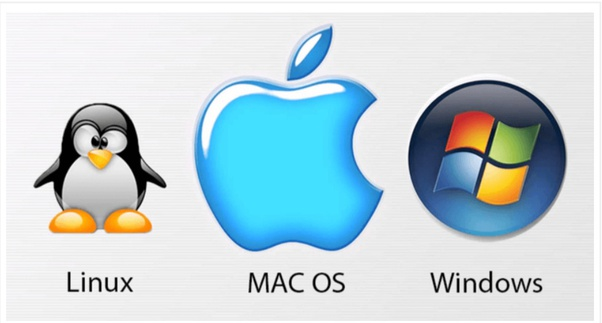

what is it?
It is a set of commands, written according to rules defined by the programming language, and then these commands go through several stages until they are executed on the computer.
It is also possible to define programming as the process of writing instructions and commands for a computer or other device, to direct it and inform it of how to handle data or how to carry out a series of required actions.
Each language has its own characteristics that distinguish it from the other and make it suitable in varying degrees for each type of program and the task required of this program.
The programming languages also have common characteristics and common borders, since all of these languages are designed to deal with computers.
Programming languages evolve with the development of computers. When the electronic computer was invented, and the computer was operating in large numbers of electronic valves - the programming language was complex, too, and it was a series of numbers and written in the form of long programming codes. These numbers are the zero numbers 0 and one 1 and this language is called bilingual Or machine language, and that was difficult for programmers. However, by creating a transistor that made the computer smaller in size and increased its capabilities, specialists and programmers at the same time created innovative programming languages that were easier to use, and programming languages became widely understood by professionals. Development and facilitation is still ongoing.
